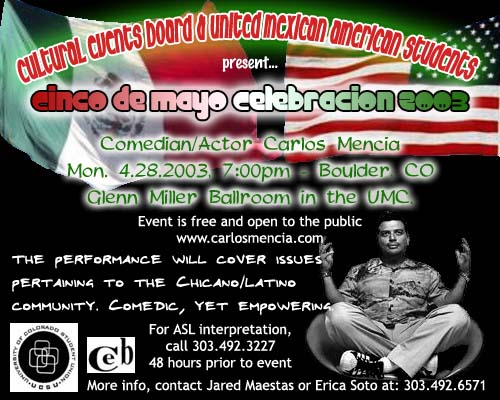
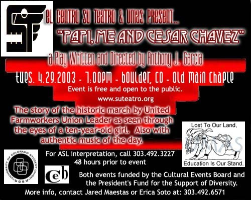

The University Memorial Center (UMC) is located in the map below as #86
(4G). And Old Main is #63 near (E3). Park anywhere you can. Beware of the parking structure (24 on the map) to the right of the UMC, it charges hourly ($1.25/hour).

United Mexican American Students (UMAS)
University of Colorado, Boulder
present
Cinco de Mayo Celebracion 2003
Both events are FREE and open to the public.


The University Memorial Center (UMC) is located in the map below as #86
(4G). And Old Main is #63 near (E3). Park anywhere you can. Beware of the parking structure (24 on the map) to the right of the UMC, it charges hourly ($1.25/hour).